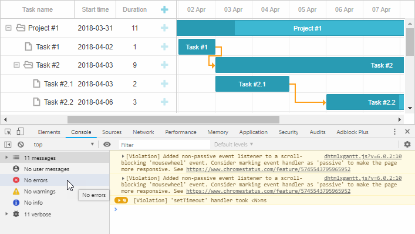
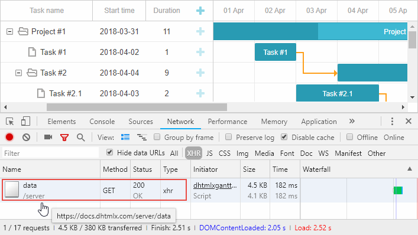
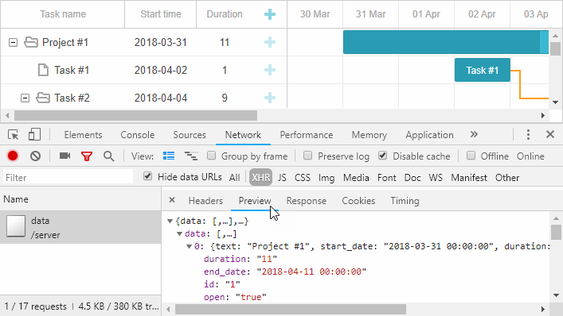
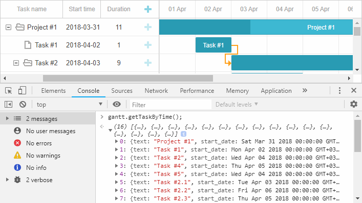

1. You try to implement the backend API either manually or following our tutorials, but Gantt doesn't show any tasks or links when you open the page.
or
2. You have troubles with saving changes to the backend.
There may be many reasons and solutions for incorrect behavior on different platforms, which we are not going to touch in this article.
Our goal here is to walk you through the common steps of investigating this kind of issue. Once you locate the issue and understand why the app is not working, the fix is usually trivial.
1. Open the browser dev tools and reload the page. Do you see any error messages in the browser console?

2. If there are any, evaluate the errors and decide whether you are able to deal with them by yourself. Otherwise, proceed to the next step.
1. Open the Network panel, make sure XHR requests are visible.
2. Reload the page and find a request that should load data from the backend. Make sure it goes to the correct URL and check the response status.

Are there any errors?
404 response status would mean there is either an incorrect URL passed to the gantt.init method or a problem in the routing settings of your application.
Select the request and check the response preview or the raw response content.

Does the response look similar to the expected data format?
You can be sure that something is wrong with the backend code or database connection settings.
Usually, the error response contains enough info to figure out what causes the issue. If you see a generic 500 server error message, you may need to temporary disable custom error pages on your server in order to see
the actual error. It's done differently on various platforms. If you're not sure where to start, just google "disable custom error page in <%your server or framework%>".
Take a look at the id, start_date, end_date, duration, parent properties.
id - items with the same id will be merged. If you have five tasks with matching ids, Gantt will display only one of them.
parent - entries the parent value of which matches the root_id config will be displayed at the root level of the tasks tree (by default - any empty value, including zero or null).
If the parent property is not empty and your dataset doesn't contain an appropriate parent task, such an item won't be displayed at all.
start_date, end_date, duration - make sure your entries contain at least two of these properties, e.g. start_date+duration. There is more information in the Data Loading article.
Make sure that the start_date/end_date formats match the format you specify in the date_format config of gantt.
Check what is stored in your database, probably the issue is there. If date formats don't match, either change the date_format config, or modify the code that serialized task dates before outputting them to the client.
Open the browser console and run gantt.getTaskByTime().
Inspect the console output. You'll likely see an array of tasks.

Again, you can check the start_date, end_date and parent properties of tasks.
If you don't see any obvious issues there, try to check your code, probably tasks are hidden by filter.
If none of the above helps, or if you don't see neither tasks, nor console errors, try to post your question at our forum or contact our tech support regarding your issue.
Please be sure to provide all the info you've collected completing the steps above.
Also, our team will need a minimal reproducible demo: either a standalone package with a simplified app (the gantt page, all required files, a database dump with some test data, or a static JSON file with data you try to load), or an online link where we could check the issue in the browser.
Back to top